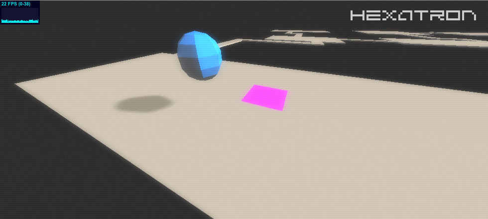
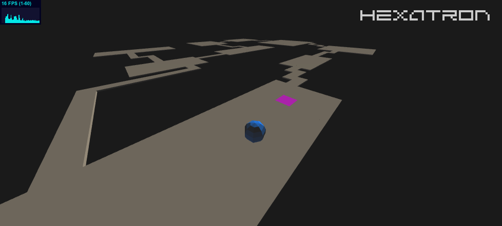
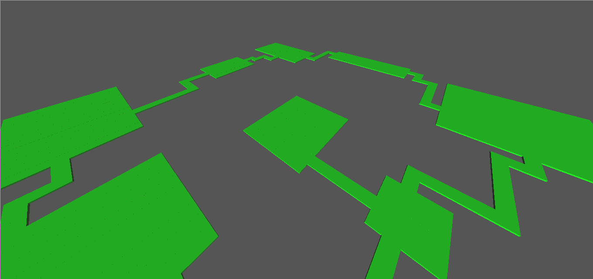

2015-02-25
Basic Site Up
Achievement Unlocked:
- Got this microsite up.
Achievement Unlocked:

Experimenting with shaders in three.js - the aesthetic demands slightly fuzzy TV noise with lines and a CRT soft glow.
I broke the GLSL shaders out into their own files and slurped in by Clojure at compile time as I don't like mixing code from different languages in a single file.

Acheivements unlocked:
Hello! I'll document progress here as and when this game comes together.

Achievements unlocked:
This is my second time using Clojure and ClojureScript and I must say it is a dream! Such expressive power in so few characters. The paredit and related plugins transform Vim into a very different and more erudite beast.
This is also my first time using rot.js which is magical. Everything you need to build a Rogue-like in one concise package.
The rendering library, three.js I have used a bit before. Interfacing it with ClojureScript has been smooth as a platonic spheroid so far.
So that's my toolset. Time to create. I'm excited!